My EV's since 1970
My EV's since 1970
My EV's since 1970
My EV's since 1970
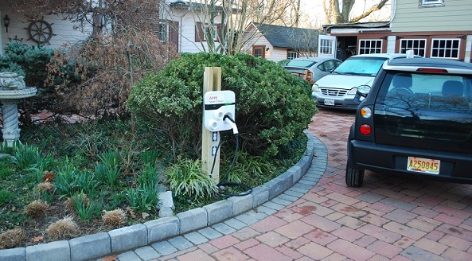 . 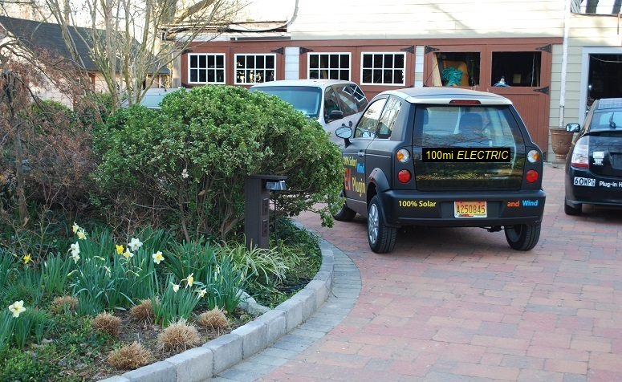
 Before and After Charging: On the left above was my initial charger installation with more work needed
on the top to install an area light.
On the right is how it looks after my wife came home and read me the terms and conditions.
You can also see a bit of the decals on the car
promoting fossil-fuel free driving slightly visible on the right.
Before and After Charging: On the left above was my initial charger installation with more work needed
on the top to install an area light.
On the right is how it looks after my wife came home and read me the terms and conditions.
You can also see a bit of the decals on the car
promoting fossil-fuel free driving slightly visible on the right.
Hidden EVSE: The quick solution to the visibility of the EVSE besides staining the post brown, and cutting the post shorter, was to put the EVSE down in the basement and simply run the 4 wires of the J-1772 connector through the conduit to the post. I dont get to see the green and red lights on the EVSE, but I can see the ones on the EV and know if charging is going on. The post also supports a small 1 Watt down-facing LED bulb for better use at night. Wow, all this is harder to see than I thought. The J-1772 handle is also painted black and is on the far side of the post along with a lighter weight (but still AWG 12) cord that easily disappears into her weeds. I used a PVC plastic shower drain flange to hold the handle. You can see two of them screwed to the front of the original white EVSE when I was demonstrating it with multiple J1772 cords and called it a Spider Charger.
THINK_City EV: The EV at the top is my black 2011 TH!NK City EV restored from its BRICK condition when bought at auction (Mar-2015). But after fixing the MLEC problem it ran for about 500 miles and died again. The MLEC and charger worked, but nothing happened when I push the GO pedal. I sold it to our local Think hobbiest and bought another one with the MLEC problem for $2500. I fixed it and my son drove it for a few years before heading up to Alaska. Now it is another spare car in the driveway. It is shown at right with my over the sidewalk solution at my wife's church.
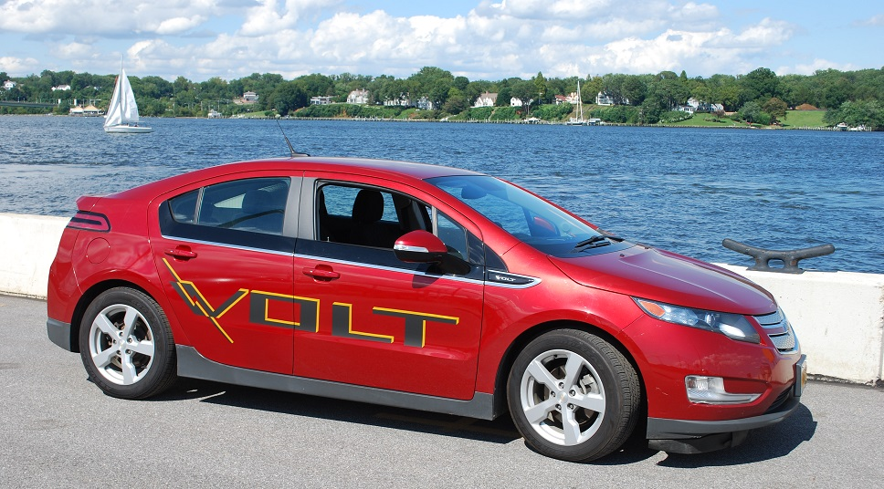 .

Finally a real EV - My Volt: In 2017 with 6 years of used EV's on the market place, in April the price of EV's were down to around $6k for Smarts, $9k for Leafs and about $14k for Volts. I snagged this red Volt for $13k. The three year olds are all comming off lease and look brand new in most cases. This one had 56k miles on it and was perfect. Then I trashed it up a bit with a very visible VOLT logo (I got the 2nd to last decal in the country). It was too dark on a red car, so I added highlights with yellow electrical tape. Then I added 240 Watts of solar panels in the Frankenvolt configuration.
Solar FRANKENVOLT: Then to add solar and a little glitz, I designed the above roofline with three Sonali 80W panels for a BTTF (back-to-the-future) look as shown here with horizontal solar panels and side-curtain-panels to close in the back. The rear hatch still works in the extended and UP positions. It was impossible to make it 3-way (to include the down position) so I designed it so that the back two panels could be removed if the side-curtains were out and I wanted to return to original hatchback. Inside is also a 6 foot bed area for overnight. The aluminum spacer panel is for my Ham antennas and the volume increased by about 5 cubic feet for hauling.
Charging Circuit: I can easily design a safe solar charging circuit (did it for my 2 solar prius's below) if I just knew where I could easily get access to the 300 volt battery terminals. Anyone?
 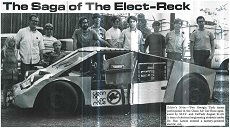
Volkswagon EV conversion 1970:
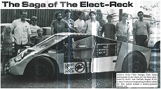
Volkswagon EV conversion 1970:
My long interest in Electric Vehicles began at 1970 at GaTech! My senior project was to build a battery EV on an old volkswagon chassis. See the project writeup also shown here in black&white ==>
City Car - 1980:
On return to the USA from Japan in 1980, I found an old Seabring Vanguard Electric City Car in the weeds behind a house in Greenbelt maryland. I restored it, and got it on the road. it worked well for my 5 mile commute to the Naval Academy in Annapolis, but when I moved in 1990 to a 15 mile one-way commute, the car could not make the round trip. Despite my 24 years of persistence against the bureaucrats at the Naval Academy, I still cannot get permission to plug the car into the standard outlet by my parking place and pay the approximately 60 cents for the electricity and the privilege. That battle continues even now in 2017!
 SOLAR-PHEV 2007: . Fortunately, I have lived long enough to enter the third wave
of Electric Vehicles in America. In 2007 I added 18 solar panels to the
roof of a salvage Prius shown above (damage hidden under the large white sign) to
provide as much as 215 peak Watts or about 1 KWh of free electricity
when parked for 8 hours in the Maryland sun. This is good for about 1 mile
of electricity for each hour in the sun. . Where you live and the season of the year
makes a difference as can be seen in the plot above of annual solar flux. But still,
Maryland gets at least 75% of what they get in Arizona.
SOLAR-PHEV 2007: . Fortunately, I have lived long enough to enter the third wave
of Electric Vehicles in America. In 2007 I added 18 solar panels to the
roof of a salvage Prius shown above (damage hidden under the large white sign) to
provide as much as 215 peak Watts or about 1 KWh of free electricity
when parked for 8 hours in the Maryland sun. This is good for about 1 mile
of electricity for each hour in the sun. . Where you live and the season of the year
makes a difference as can be seen in the plot above of annual solar flux. But still,
Maryland gets at least 75% of what they get in Arizona.
 SOLAR Energy and Charging: The solar panels on the car were a nice touch back in 2007,
but as the cost of home-solar plumeted, it is far more practical to ignore the
15 sqft on the roof of the car when my house roof contains 100 times more area!
So in 2010 my first 8 kW solar array in my backyard
(photo to right of the first 2.8 kW)
provided up to 10 KWH per day which is equivalent to about 40 miles on
the road. But this project was mired in the mud for 2 years because
of Maryland Department of the Environment rules against solar
panels on piers or within 100' of the water.
See Solar Laws headaches.
SOLAR Energy and Charging: The solar panels on the car were a nice touch back in 2007,
but as the cost of home-solar plumeted, it is far more practical to ignore the
15 sqft on the roof of the car when my house roof contains 100 times more area!
So in 2010 my first 8 kW solar array in my backyard
(photo to right of the first 2.8 kW)
provided up to 10 KWH per day which is equivalent to about 40 miles on
the road. But this project was mired in the mud for 2 years because
of Maryland Department of the Environment rules against solar
panels on piers or within 100' of the water.
See Solar Laws headaches.
Solar Update: By 2014, a large 18 sqft home solar panel cost less than a single 1 sqft panel on my car and efficiences are almost double. So, all my solar interests are now with the roof of my house, not the car. My home solar array is now up to 16 kW and producing electicity for half the cost of the utility. This powers all of my energy needs including my house, my heatpump and AC and my electric car. This has reduced my fossil fuel burning from over 3000 gallons equivalent per year down to only about 300 gallons. That last 300 gallons is for the wife's Prius and occasional trips to the kids and Gramma's.
Solar Prius - Power-to-GO: . The only real value of the solar panels on the car came from their portability. For daily commuting, they only gained 10% or less in MPG. But like all solar, the higher value comes when I am out of plug's reach of the grid. Solar Power portability gives peace-of-mind where there is no gas or plug-in electricity available. Or for 8 hours all day parked at work. See more about Prius Emergency Field-Day Power. As an aside, field work involves a lot of overnight accomodations in the Prius-Inn. See my Prius Inn accomodations for one.
More photos of the final installation (they are still holding in there now 8 years later!): Roof Rear, Front, Driver corner, Side and Hood,
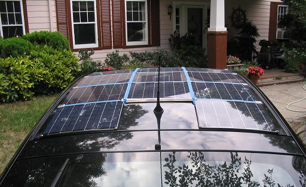 Payback: . If you can take solar power where you need it, then its value can be far greater than 15 cents per KWH. . And if you need power in the field, and don't have any, then solar power is cheap at any price. . Just consuming it in the Prius is an equivalent payback of 30 cents per KWH which is better than the 15 cents at home. The incentive for this conversion comes from the simple economics of solar power:
COST: . To fit the roof smoothly, the array was made up of about $2400 of small 12 volt panels to total to the 240V prius battery plus another $800 for the 18 added batteries. This was in 2007. It make no sense to do this now on the roof of the car when the roof of the house is 20 times more economical. But solar lasts a lifetime and so I enjoy having them there with the ability to power he car and camoping accessories anywhere and they are far more valuable to me than the $2500 back-seat- headrest-video displays other cars have to rot the brains of your kids! The point of solar is to reduce our dependence on foreign oil and get the added benefit power-to-go wherever I need it.
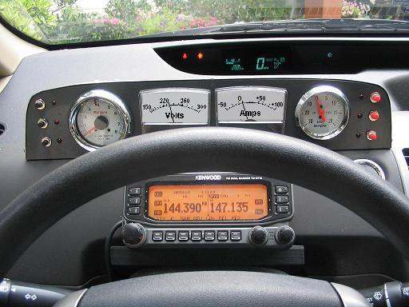 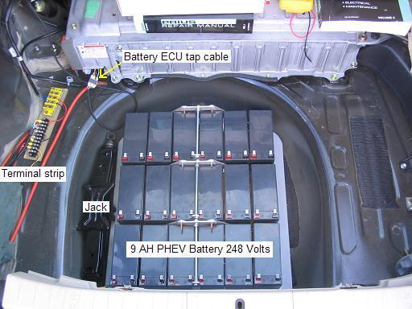
PHEV Conversion: . The primary purpose of the PHEV battery in this car was not so much for longer range, but to have a place to safely put the solar power without overcharging or over cycling the original Toyota HV battery. . The photo shows the added 9 Amp-Hour cells in the wheel.
The circuit feeds current into the Prius to extend gas mileage but at a low enough rate (half hour) to not confuse the Prius computers. Also, the circuit prevents current from the OEM battery back into the PHEV battery. The only time the PHEV battery is charged is during regenerative braking, from solar power, and from over night plug in. The batteries are designed to be cycled to about 50% yielding a lifetime of about 2 years.
A retro analog instrument panel was added to monitor voltage and currents and added a tach and vacuum gauge (missing in the original Prius). The left meter is 150 to 300 volts and the right one is -50 to 0 to +100 amps. . (click for full size image). The APRS ham radio with GPS below the dash provides tactical situational awareness of the positions, status and messages of similarly equipped mobiles in the surrounding area. The APRS network is linked to the internet and so you can always see where all the Hams are.
Bottom line: . If you want to have some solar power in the field such as for Field events, emergencies, or just watching the kids soccer match, this array has been designed to aerodynamically and asthetically match the Prius for maximum economy.
IEEE Conference on PHEV Technology, Washington DC, 19 Sep 2007: [IEEE conference link]
My Do-it-yourself Solar PHEV was invited to this meeting in contrast to the commercial Plug-In Hybrid Conversions that were prominantly on display. We were offered a free $25 parking space. (Mine is the second from left). Only problem was, that no one told the parking lot zombie, and it took us an hour of wrangling to get out of the valet parking lot after it was over!
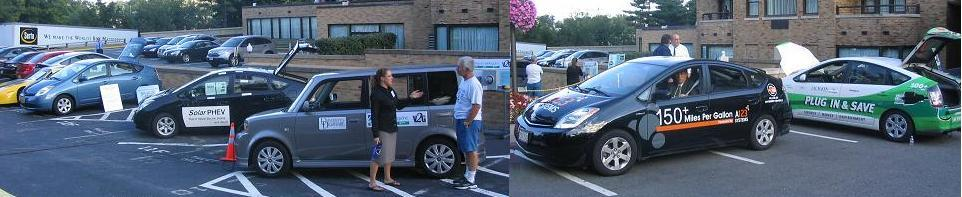
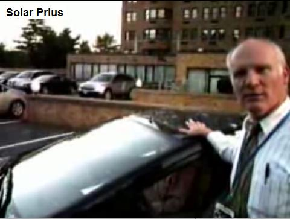
The other three Prius had 5 KWH or so(?) of added Lithium PHEV batteries costing several thousand dollars? . In contrast, my 2 KWH Lead-Acid batteries only cost about $500, and mine was charging the whole time parked in the sun, while they spent the first hour trying to find a place to plug in. Well, actually, the other Prius just plugged into 115 convenience outlets, but the E-BOX to my right was all electric and they had to find a 240 volt 50 amp outlet to plug in. They drove 100+ miles from Deleware on all-electric and the box was thirsty.
As I was driving away, a photographer came over and did a quick interview. . (Frame at right). Although he completely missunderstood the 80% State of Charge, he did capture some of the gyst of what I was saying See his video.
VEHICLE-TO-GRID: . Look closely over the shoulder of the T-shirt guy to see the portable electric meter that teh U-of-Delaware takes with them, because their Ebox can both SOURCE and SINK energy. This demonstrates the coming Vehicle-To-Grid technology which has great promise for meeting peak power demand.... That is, if 75% of the Vehicles in the USA were PHEV's, then the installed instantaneous POWER capacity in those 150 million cars parked all over the USA, represent FIVE TIMES the entire Electric Generating Capacity of all USA Generating plants combined!
Yet charging those 150 million cars only takes 7% off the power grid at night when there is excess capacity. With the right signalling of demand and pricing info to those 150 million cars, then the utilities would be willing to pay as much as $2k to $4k per car over the life of the car, to take back a few % during peak demand the next day...

Emergency Power Trailer: A small 300 watt Solar-Scooper or Solar-Fanny provides additional power in the field. See Prius as an Emergency Power Station.
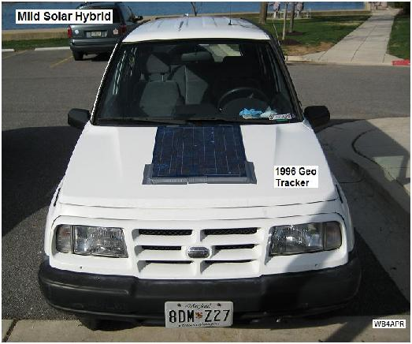
Mild Solar Hybrid: . My son's car is my second Solar Hybrid concept that attempts to reduce foreign oil dependence by improving fuel economy on a 1996 Geo Tracker. I call this a mild hybrid because it shifts some of the mechanical loads from the gas burning internal combustion engine to electrical loads and then uses solar power and plug-in techniques to make up the difference. Simply loosening the alternator and removing the fan belt improved gas mileage almost 15% from about 29 to about 33 MPG.
Of course, this eliminates the fan and water pump cooling, as well as the alternator. To mitigate the losses of these systems, a thermostatically controlled electric water pump and fan should be added. Extra battery capacity in the form of a marine deep cycle 12 volt battery also had to be added as well as a solar panel to replenish the electricity consumed on the way to work and then a simple plug-in 12 volt battery charger (1 amp) for use at night to make up for the trip home. In this photo, the solar panel is only duct taped to the hood, since the car was handed down to us from my father-in-law, and my wife wouldn't let me drill any holes in it or make any irreversable mods.
This car is a commuter car (15 mile commute, no-expressways) so its daily usage is well known and works reliably in this mild-hybrid configuration. But pushing the envelope towards multiple trips, long distances, prolonged night time driving, or rain conditions can add substantially to the electrical load and add risk to the total electrical capacity.
The Prius Inn: I believe it was *Hobbit who first used the term Prius Inn to describe the overnight accomodations for one in the right side of the Prius. Shown below is my rendition using a system of two overlapping plywood pads with strong support so that they can be used either in the full size arrangement for those over 5'6" who like to sleep flat, fully extended but with the rear seat removed, or in the short configuration by just lowering the front seat. But I prefer the Prius Hotel configuration shown later on this page.
 .
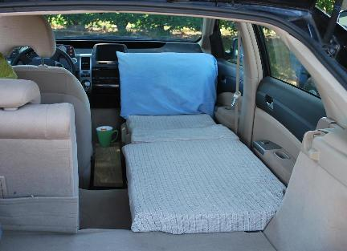 .
.
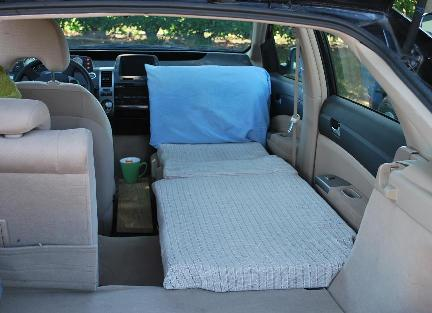 .
The full size arrangement above left provides plenty of leg, elbow and head room and involves a third pad in the center to extend the bed to a full 6 feet 2 inches in length. Although this necessitates removing the back seat (two easy to reach bolts), it is a very comfortable. By extending the length with a center pad, the original short-configuration pads with their plywood supports can still be stored in only 37 inches of storage space. Unfortunately on the day I got around to taking photos, I just happened to have the center console out, so this photo is actually not representive of normal use. Normally the center console is there.
The short configuration shown above right has the rear pad overlaping the forward pad's plywood base for strong support. This configuration has the advantage of not having to remove the rear seat and find a place for it (or leaving it at home). A wood support for the back seat supports the rear pad level with the front pad as can be seen in this rear view .
WOODIE PRIUS #2: . My second salvage Prius is rebuilt with a wooden rear-end. As of March 2010 the car has passed state inspection and is on the road. Below are the BEFORE photos.
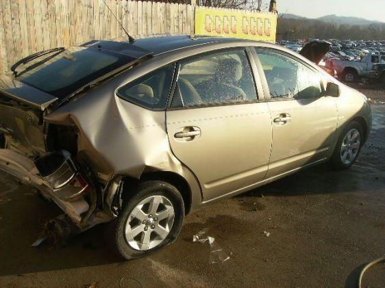 . 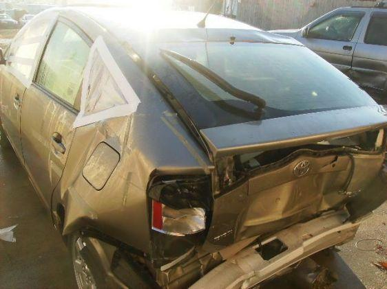
My local gas station called in the State inspector himself who
promptly failed it the first time. (He was making demands beyond the written law.)
But it really wasn't
completely finished and he did not even look at the inside of the trunk.
We disagreed on whether the bumper can be laminated of four 1x6 Oak planks or has to
be solid 3x6 and what "has to be the full width of the car" means... I won on
both accounts... given that the
original bumper was only 51" wide and this Oak one is 53".
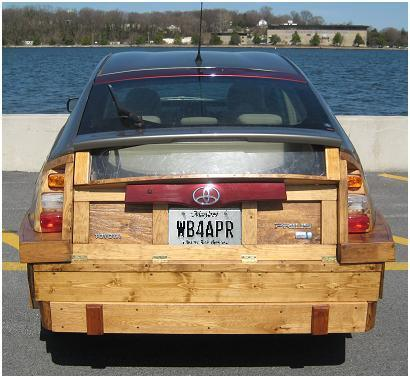

There does not appear to be much of an aerodynamic penalty
since I'm still getting about 60 MPG.
Its was a 2005 with only 19K miles on it when I got it for $6500 back in 2007.
It sat in
the yard for 2 years awaiting wife's permission to work on it. Someone even captured
it on the
There-I-Fixed-it
site. But I didn't go to the extremes as this guy did
back in 1943!
P.S. After these photos were taken I did go and have an autobody shop smooth out the metal
all around for a nice looking job (and $1100 sheesh)...
PRIUS HOTEL: The better arrangemnt for sleeping is for two and is simpler than the Prius Inn. Rather than the three custom boards to make the front seat level, the Prius Hotel simply slides the seats forward and installs two boards to extend the back seats as shown below. Four small wooden supports are screwed to the plastic trim to support the boards. The rear of the boards rests on the headrests of the folded down rear seats. This arrangement gives 6' 4" headroom. Since I used Kakhi pants for the covering material, I left the pockets in place. These cover about 1" of hard foam. For sleeping, the entire area then is covered with a suitable foam mattress.
 .
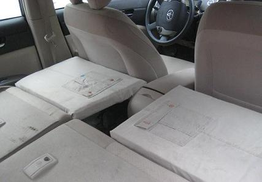 .
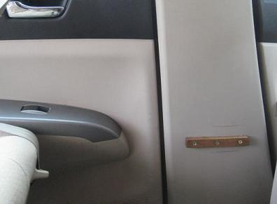 .
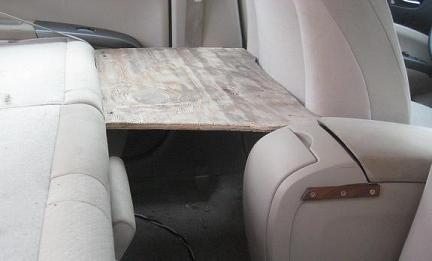 .
.
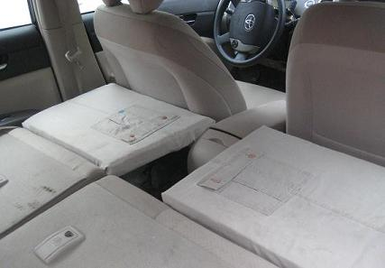 .
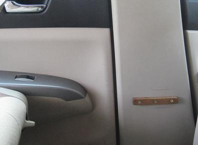 .
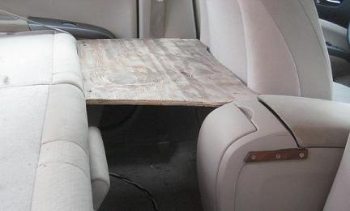 .
HOME FROM COLLEGE: As a temporary add-on to get #1 son back from college, I folded the tail-gate down and half-lifted the hatch and added side-boards and another back-piece to increase the storage space by about 9 cubic feet. If used for sleeping, this configuration could be called the Prius Challet with over 7' of headroom!
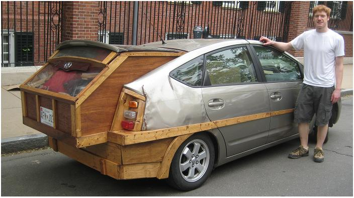
This is only a temporary configuration for hauling long distances in decent weather. It comes apart into three stackable pieces of wood, and then the tail-gate and hatch close normally for aerodynamic travel. But the interesting thing is, that still a carpet and one book shelf did not fit. So we added it on the top. The result is one of the worst looking aerodynammic arrangement you can imagine. Yet over the 300 mile trip on cruise control at 60 MPH, we got 46 MPG. Thats down about 10 MPG from normal, but still not bad compared to some lead-footed Prius drivers.
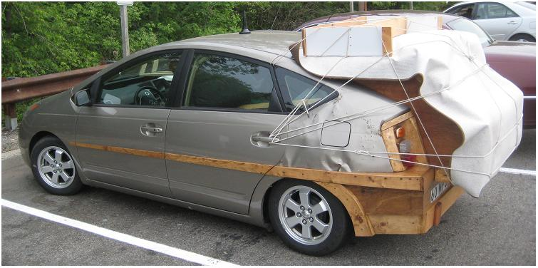
Re-cycled Prius #3: The next one below I snagged in Jan 2010 for my daughter's graduation present. Apparently crushed by a fallen tree. It is a 2005 with 92K miles on it. It sat in the junk yard for months but the junkyard dog would not go below $5500 parts value for it, since it was in 100% running condition and all normal crash-parts were perfect, just the squashed roof...
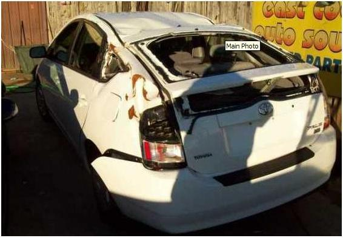

Now 18 months later, on the right above, I finally got some time to work on it (still not water proofed) but you can see the idea. These solar panels are mounted to two wooden rails (gray) curved to match the roof line which let the larger panels extend over all the damaged area and almost out over the doors. (see rails in work). In the link photo you can see how the 3/8" wood was kerfed to curve and then long strips of wood added underneath on the outside edge to build them up to nearly 1.5" thick to fit the 3D curves of the roof line. The 6 wood wood blocks in the first link are just dimensioned supports to push up the solar panels into a proper curve from the moonscaped out-of-curve crushed roof, instead of just laying flat.
The left rear quarter panel still has lots of wrinkles. A little Bondo will fix that up someday... Notice, to date, other than a lot of sledge-hammering pounding, jacking and pulling, not one bit of normal "body work" has been done. No bondo, no filler, no nothing. Just hide it all under the solar panels, and then took a paint brush and white Rustoleum paint to the left rear quarter panel. Oh, and if you look closely, you can see that the left rear quarter window is a sheet of plywood painted black! (Oh, and the lower-half rear-window is also black painted plywood)... Now that I got it through safety inspection, I will use that plywood as a template to make it again out of 1/4" plexiglass to improve the view.
OOPS, I forgot. Yes, It is a new taillight and new piece of glass in the rear hatch. Unfortunately, before I got started on it, it sat out in my secret hiding place (from the wife) behind the local 7-11 for 6 months and vandals sledge-hammered out the front window, and hammered off the pax-side rear view mirror. But those were simple replacement items.
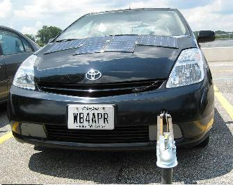 TOWING: DO NOT DO THIS! Towing the Prius on anything other than front wheels off the ground is not recommended. However, for moving my projects around the neighborhood and back (wife won't allow unfinished projects in the driveway), I made a small tow bar that configures to the front bumper hook and allows me to tow the unregistered Prius to and from its nearby hiding place as shown below:
The parallel angle irons extend beyond the pivot point to maintain solid contact with the full width of the tow hook coming out of the bumper. This assures that there is little left to right movement so that the towed car will track the towing car. See the side view and a closer view. You can see that the bolt is tightly compressed to an internal spacer and 4 washers to keep the tight spacing for proper tracking.
WARNING: It worked a few times, but once while turning a corner (too tight) the Toyota tow-bolt simply snapped in half. The ring which is welded on the end simply broke its weld. The towed prius was now free to follow its momentum and go wherever it wanted! Fortunately, I was only going maybe 3 MPH and simply pulled the towing prius out of the way to the left, jumped out the drivers door, and stood in front of the coasting prius and by hand slowed it to a stop just a few feet off the road. SCARRY indeed.
PARKING PAWL: and then you have to put the towed Prius into Neutral. Which of course is impossible to do unless you can get it to READY state (and if you can do that, why do you need to tow it?). Anyway, get into neutral, set the parking brake and then remove the fuse under the hood that powers the parking pawl. Its a 30 amp fuse that I think it is labeled PCON MOTOR. You will get the red-triangle of death and check-engine lights, but they will go away (eventually) when you replace the fuse.
 ALTERNATIVE ENERGY: We can do it. Just reducing our oil demand by 25% will
prevent $200 MILLION per day from going to the destabilization of the Middle East.
That keeps a lot of money out of the hands of the terrorists. Shown to right is my
daughter's 2004 high school environmental project using a solar panel and a car battery
to run her room off-grid. I woke up to the very favorable economics of grid-tie
systems (compared to the inefficient and non-competative battery storage systems)
during the summer of 2009 and this has now morphed into plans for my
8 KW Grid Tie system. One third of the
final system shown below is temporarily propped up in the backyard awaiting approvals (and city-hall
issues(see the web page)).
ALTERNATIVE ENERGY: We can do it. Just reducing our oil demand by 25% will
prevent $200 MILLION per day from going to the destabilization of the Middle East.
That keeps a lot of money out of the hands of the terrorists. Shown to right is my
daughter's 2004 high school environmental project using a solar panel and a car battery
to run her room off-grid. I woke up to the very favorable economics of grid-tie
systems (compared to the inefficient and non-competative battery storage systems)
during the summer of 2009 and this has now morphed into plans for my
8 KW Grid Tie system. One third of the
final system shown below is temporarily propped up in the backyard awaiting approvals (and city-hall
issues(see the web page)).
Wind Power: The first-started and last-to-finish
part of my home energy system is installing a
400W wind generator at the top of the tree to the right. Last year I finished installing
permanent aluminum ladders to the 80 foot level. The problem preventing further progress
for many years
was that I had no practical use of the 24 VDC generated. Putting it into batteries is so
inefficient, it costs more than the energy is worth. But!...
This last year (2009) has now finally seen an easy
solution to that problem. Now at least two companies are selling micro-grid-tie
inverters rated at about 200W each for about $200. This means I can backfeed my wind
power also.. even though it is small, every bit helps.
Bob Bruninga, WB4APR
APRS Engineering LLC
. 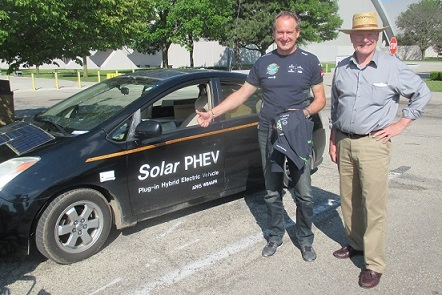
Solar Plane, Solar Prius, why not. During the Dayton Hamvention 2016, the round-the-world Solar Impulse landed at Dayton and I just missed the landing by 5 minutes. Then all weekend I tried to find out more info about when the plane would be avaiable for tours or to see it up close. I kinda gave up. Nothing seemed to be in the media. Then on Monday after all the hams had left I went to tour the Wright-Paterson AFM Air Museum and more or less had the whole place to myself. I could wander for 5 mintues or more and never see anyone else. Then I saw two guys in flight suits talking in French ... I thought they migth know soimething about the Solar Impulse. Maybe they were part of the travelling entourage groud crew.
"You guys know anything about the Solar Impulse?" The tall one answered, "yes, it landed last night". I ask, "Well are they going to have any tours or open house? I cant find out anything". He said, "Not really, its leaving at 5 AM tomorrow"... Now having gained some info I needed, I wandered away...
Then I began to wonder... and wandered back. "You guys aren't the pilots are you?" and one said, "yes, I'm Andre Borschberg." After picking myself up off the floor, I stumbled through something about how admiring I am of their solar initiative and how great their mission is, etc. Gushing along I said something about being 100% solar myself at home and driving an EV. He lit up and asked "That's not your red Tesla in the parking lot is it?" I said, no, mine is the beat-up Solar Prius about 10 cars down. He responded "Wow, I saw that one and we took pictures of it!"
I gushed some more and then slinked away so as to not sound like too much of a solar groupie... Then I began to realize that if Andre saw my car on the way in, then he would be passing it on the way out. After another hour or so of touring the museum they headed out and I was able to get to the EV's first and I asked Andre for a photo, and he was happy to oblige saying something like "solar Impulse... solar car... good idea"... His camera man asked me some details about my car and as he and Andre walked off to their van, I could see the camera man passing along the details to him.
See Sitemap of all my other APRS, Energy, EV and Ham Radio pages
{kind=link}
{kind=link}
{kind=link}
{kind=link}
{kind=link}
{kind=link}
{kind=link}
{kind=link}
{kind=link}
{kind=link}
{kind=link}
{kind=link}
{kind=link}
{kind=link}
{kind=link}